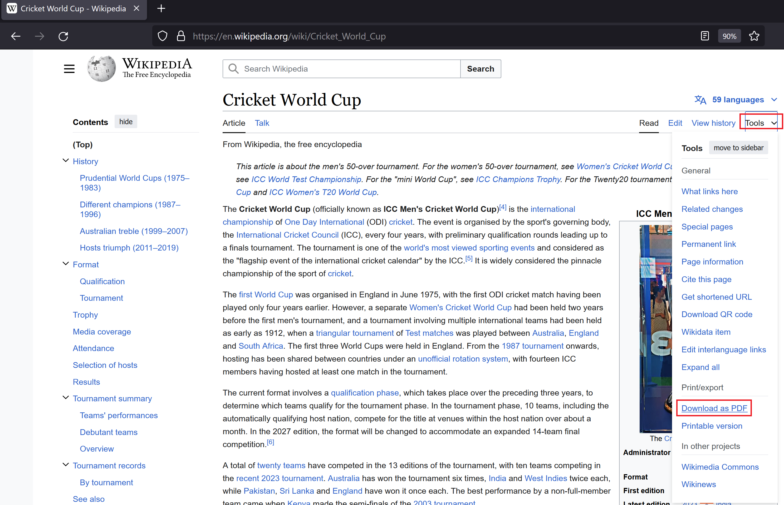

None #
先决条件 #
- 您需要一个 SAP HANA Cloud 矢量引擎账户 - 请参阅 SAP HANA Cloud 矢量引擎 - 配置试用账户指南以创建试用账户。
- 如果需要，EmbeddingModel 的 API 密钥，用于生成向量存储存储的嵌入。
自动配置 #
Spring AI 没有为 SAP Hana 向量存储提供专用模块。用户应使用 Spring AI 中 SAP Hana 矢量存储的标准矢量存储模块 - spring-ai-hanadb-store 在应用程序中提供自己的配置。
请查看向量存储的 [
HanaCloudVectorStore 属性](#hanacloudvectorstore-properties)列表，了解默认值和配置选项。
此外，您将需要一个已配置的 [[EmbeddingModel](../embeddings.html#available-implementations)](../embeddings.html#available-implementations) bean。请参阅 [[EmbeddingModel](../embeddings.html#available-implementations)](../embeddings.html#available-implementations) 部分以了解更多信息。
HanaCloudVectorStore 属性 #
您可以在 Spring Boot 配置中使用以下属性来自定义 SAP Hana 矢量存储。它使用 spring.datasource。 properties 来配置 Hana 数据源和 spring.ai.vectorstore.hanadb。 属性来配置 Hana 矢量存储。
构建示例 RAG 应用程序 #
演示如何设置使用 SAP Hana Cloud 作为矢量数据库的项目，并利用 OpenAI 实现 RAG 模式
- 在 SAP Hana DB 中创建表 CRICKET_WORLD_CUP：
- 在 pom.xml 中添加以下依赖项
您可以将属性
spring-ai-version设置为 <spring-ai-version>1.0.0-SNAPSHOT</spring-ai-version> ：
<dependencyManagement>
<dependencies>
<dependency>
<groupId>org.springframework.ai</groupId>
<artifactId>spring-ai-bom</artifactId>
<version>${spring-ai-version}</version>
<type>pom</type>
<scope>import</scope>
</dependency>
</dependencies>
</dependencyManagement>
<dependency>
<groupId>org.springframework.boot</groupId>
<artifactId>spring-boot-starter-web</artifactId>
</dependency>
<dependency>
<groupId>org.springframework.ai</groupId>
<artifactId>spring-ai-pdf-document-reader</artifactId>
</dependency>
<dependency>
<groupId>org.springframework.ai</groupId>
<artifactId>spring-ai-starter-model-openai</artifactId>
</dependency>
<dependency>
<groupId>org.springframework.ai</groupId>
<artifactId>spring-ai-starter-vector-store-hana</artifactId>
</dependency>
<dependency>
<groupId>org.projectlombok</groupId>
<artifactId>lombok</artifactId>
<version>1.18.30</version>
<scope>provided</scope>
</dependency>
- 在 application.properties 文件中添加以下属性：
创建一个名为 CricketWorldCup 的 Entity 类，该类从 HanaVectorEntity 扩展而来： #
package com.interviewpedia.spring.ai.hana;
import jakarta.persistence.Column;
import jakarta.persistence.Entity;
import jakarta.persistence.Table;
import lombok.Data;
import lombok.NoArgsConstructor;
import lombok.extern.jackson.Jacksonized;
import org.springframework.ai.vectorstore.hanadb.HanaVectorEntity;
@Entity
@Table(name = "CRICKET_WORLD_CUP")
@Data
@Jacksonized
@NoArgsConstructor
public class CricketWorldCup extends HanaVectorEntity {
@Column(name = "content")
private String content;
}
- 创建一个名为 CricketWorldCupRepository 的 Repository，该 Repository 实现 HanaVectorRepository 接口：
package com.interviewpedia.spring.ai.hana;
import jakarta.persistence.EntityManager;
import jakarta.persistence.PersistenceContext;
import jakarta.transaction.Transactional;
import org.springframework.ai.vectorstore.hanadb.HanaVectorRepository;
import org.springframework.stereotype.Repository;
import java.util.List;
@Repository
public class CricketWorldCupRepository implements HanaVectorRepository<CricketWorldCup> {
@PersistenceContext
private EntityManager entityManager;
@Override
@Transactional
public void save(String tableName, String id, String embedding, String content) {
String sql = String.format("""
INSERT INTO %s (_ID, EMBEDDING, CONTENT)
VALUES(:_id, TO_REAL_VECTOR(:embedding), :content)
""", tableName);
this.entityManager.createNativeQuery(sql)
.setParameter("_id", id)
.setParameter("embedding", embedding)
.setParameter("content", content)
.executeUpdate();
}
@Override
@Transactional
public int deleteEmbeddingsById(String tableName, List<String> idList) {
String sql = String.format("""
DELETE FROM %s WHERE _ID IN (:ids)
""", tableName);
return this.entityManager.createNativeQuery(sql)
.setParameter("ids", idList)
.executeUpdate();
}
@Override
@Transactional
public int deleteAllEmbeddings(String tableName) {
String sql = String.format("""
DELETE FROM %s
""", tableName);
return this.entityManager.createNativeQuery(sql).executeUpdate();
}
@Override
public List<CricketWorldCup> cosineSimilaritySearch(String tableName, int topK, String queryEmbedding) {
String sql = String.format("""
SELECT TOP :topK * FROM %s
ORDER BY COSINE_SIMILARITY(EMBEDDING, TO_REAL_VECTOR(:queryEmbedding)) DESC
""", tableName);
return this.entityManager.createNativeQuery(sql, CricketWorldCup.class)
.setParameter("topK", topK)
.setParameter("queryEmbedding", queryEmbedding)
.getResultList();
}
}
- 现在，创建一个 REST 控制器类 CricketWorldCupHanaController，并将 ChatModel 和 VectorStore 自动装配为依赖项在此控制器类中，创建以下 REST 端点：
- /ai/hana-vector-store/cricket-world-cup/purge-embeddings - 从 Vector Store 中清除所有嵌入
- /ai/hana-vector-store/cricket-world-cup/upload - 上传 Cricket_World_Cup.pdf，以便其数据作为嵌入存储在 SAP Hana Cloud Vector DB 中
- /ai/hana-vector-store/cricket-world-cup - 在 SAP Hana DB 中使用 Cosine_Similarity 实现 RAG
package com.interviewpedia.spring.ai.hana;
import lombok.extern.slf4j.Slf4j;
import org.springframework.ai.chat.model.ChatModel;
import org.springframework.ai.chat.messages.UserMessage;
import org.springframework.ai.chat.prompt.Prompt;
import org.springframework.ai.chat.prompt.SystemPromptTemplate;
import org.springframework.ai.document.Document;
import org.springframework.ai.reader.pdf.PagePdfDocumentReader;
import org.springframework.ai.transformer.splitter.TokenTextSplitter;
import org.springframework.ai.vectorstore.hanadb.HanaCloudVectorStore;
import org.springframework.ai.vectorstore.VectorStore;
import org.springframework.beans.factory.annotation.Autowired;
import org.springframework.core.io.Resource;
import org.springframework.http.ResponseEntity;
import org.springframework.web.bind.annotation.GetMapping;
import org.springframework.web.bind.annotation.PostMapping;
import org.springframework.web.bind.annotation.RequestParam;
import org.springframework.web.bind.annotation.RestController;
import org.springframework.web.multipart.MultipartFile;
import java.io.IOException;
import java.util.List;
import java.util.Map;
import java.util.function.Function;
import java.util.function.Supplier;
import java.util.stream.Collectors;
@RestController
@Slf4j
public class CricketWorldCupHanaController {
private final VectorStore hanaCloudVectorStore;
private final ChatModel chatModel;
@Autowired
public CricketWorldCupHanaController(ChatModel chatModel, VectorStore hanaCloudVectorStore) {
this.chatModel = chatModel;
this.hanaCloudVectorStore = hanaCloudVectorStore;
}
@PostMapping("/ai/hana-vector-store/cricket-world-cup/purge-embeddings")
public ResponseEntity<String> purgeEmbeddings() {
int deleteCount = ((HanaCloudVectorStore) this.hanaCloudVectorStore).purgeEmbeddings();
log.info("{} embeddings purged from CRICKET_WORLD_CUP table in Hana DB", deleteCount);
return ResponseEntity.ok().body(String.format("%d embeddings purged from CRICKET_WORLD_CUP table in Hana DB", deleteCount));
}
@PostMapping("/ai/hana-vector-store/cricket-world-cup/upload")
public ResponseEntity<String> handleFileUpload(@RequestParam("pdf") MultipartFile file) throws IOException {
Resource pdf = file.getResource();
Supplier<List<Document>> reader = new PagePdfDocumentReader(pdf);
Function<List<Document>, List<Document>> splitter = new TokenTextSplitter();
List<Document> documents = splitter.apply(reader.get());
log.info("{} documents created from pdf file: {}", documents.size(), pdf.getFilename());
this.hanaCloudVectorStore.accept(documents);
return ResponseEntity.ok().body(String.format("%d documents created from pdf file: %s",
documents.size(), pdf.getFilename()));
}
@GetMapping("/ai/hana-vector-store/cricket-world-cup")
public Map<String, String> hanaVectorStoreSearch(@RequestParam(value = "message") String message) {
var documents = this.hanaCloudVectorStore.similaritySearch(message);
var inlined = documents.stream().map(Document::getText).collect(Collectors.joining(System.lineSeparator()));
var similarDocsMessage = new SystemPromptTemplate("Based on the following: {documents}")
.createMessage(Map.of("documents", inlined));
var userMessage = new UserMessage(message);
Prompt prompt = new Prompt(List.of(similarDocsMessage, userMessage));
String generation = this.chatModel.call(prompt).getResult().getOutput().getContent();
log.info("Generation: {}", generation);
return Map.of("generation", generation);
}
}
由于 HanaDB vector store 支持不提供 autoconfiguration 模块，因此您还需要在应用程序中提供 vector store bean，如下所示，作为示例。
@Bean
public VectorStore hanaCloudVectorStore(CricketWorldCupRepository cricketWorldCupRepository,
EmbeddingModel embeddingModel) {
return HanaCloudVectorStore.builder(cricketWorldCupRepository, embeddingModel)
.tableName("CRICKET_WORLD_CUP")
.topK(1)
.build();
}
- 使用来自维基百科的上下文 pdf 文件
转到[
维基百科](
https://en.wikipedia.org/wiki/Cricket_World_Cup)并[
下载](
https://en.wikipedia.org/w/index.php?title=Special:DownloadAsPdf&page=Cricket_World_Cup&action=show-download-screen)板
球世界杯页面作为 PDF 文件。  使用我们在上一步中创建的文件上传 REST 端点上传此 PDF 文件。